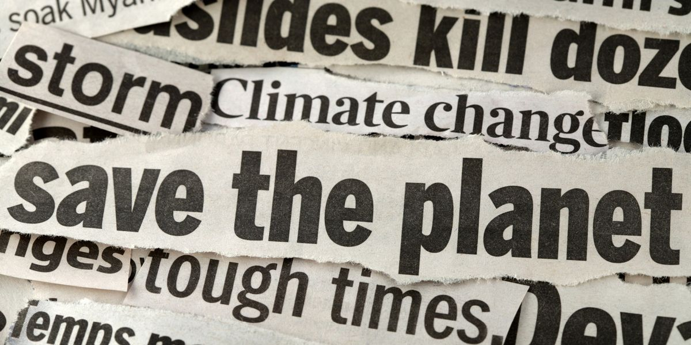

Greenwave - News
Incoming News From Around The Globe About Climate Change
Last Updated: 04:12 PM, GMT, 25.08.2024

Record-Breaking Global Heat
- Global heat records are being broken almost every month, with the 14 months to July 2024 all the hottest months on record.
- Nature-based solutions can help to provide heat respite for urban populations.
- The World Economic Forum’s Climate and Health Initiative is uniting stakeholders and policymakers to address the impacts of global warming.
Read more: www.weforum.org/agenda/2024/08/extreme-heat-climate-change/
Modern hurricanes are rewriting the rules of extreme storms
The behaviour of the world's most powerful storms is evolving. To adapt to more destructive hurricanes, we need to know how they're changing.
Read more: www.bbc.com/future/article/20240712-modern-hurricanes-are-rewriting-the-rules-of-extreme-storms
Brazil sends 1,500 firefighters to combat Amazon forest blazes
Environment minister says severe drought is ‘aggravating’ factor as smoke engulfs Porto Velho city
Read more: www.theguardian.com/environment/article/2024/aug/22/brazil-sends-1400-firefighters-to-the-amazon-amid-devastating-blazes
Rubbish and disease could disrupt Antarctic ecosystems as ice buffers melt, study finds
Simulated study shows southern ecosystems could be compromised by objects from South Africa, South America, New Zealand and Australia as global heating continues
Read more: www.theguardian.com/world/article/2024/aug/22/antarctica-ice-buffers-melt-study-rubbish-disease
A sea tornado just sank a yacht in the Mediterranean. We might be seeing more of them.
A deadly waterspout is strongly suspected of sinking a yacht off the coast of Italy. Scientists weigh in on whether they’ll worsen as the planet warms.
Read more: www.nationalgeographic.com/environment/article/waterspouts-tornado-mediterranean-yacht-climate
Marine pollution, explained
A wide range of pollution—from plastic pollution to light pollution—affects marine ecosystems.
Read more: www.nationalgeographic.com/environment/article/critical-issues-marine-pollution
Climate change made ‘monsoon downpour’ behind Kerala landslides 10% more intense
The “monsoon downpour” that triggered deadly landslides in Kerala’s Wayanad district last month was made 10% heavier by human-caused climate change, a new rapid attribution study says.
Read more: www.carbonbrief.org/climate-change-made-monsoon-downpour-behind-kerala-landslides-10-more-intense/
'Your body goes into shutdown mode': how heat transformed the Paris Olympics in 100 years
From time in saunas to turning off fans, athletes have been bracing for extreme heat at the Olympics.
Read more: www.bbc.com/future/article/20240725-how-climate-change-has-altered-paris-olympics-between-1924-and-2024
How climate crisis made this UK summer feel like a letdown
July was warmer than 1961-1990 average and the 34.8℃ peak this month was very hot, but perceptions have changed
Read more: www.theguardian.com/news/article/2024/aug/22/how-climate-crisis-made-this-uk-summer-feel-like-a-letdown-weatherwatch
How wildfires are changing face of the Mediterranean landscape
The Mediterranean is a landscape that's always been shaped by fire. But now climate change is supercharging heatwaves and wildfires, the region is at risk of long-term change to its ecosystems.
Read more: www.bbc.com/future/article/20230803-wildfires-the-changing-face-of-the-mediterranean-landscape